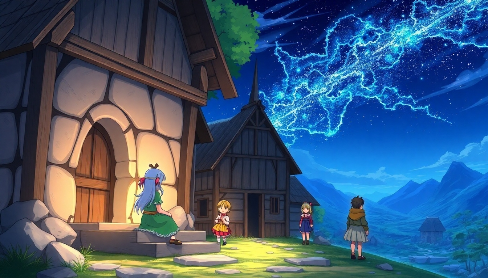

Kapitel 1: Das Geheimnis des Meteors

Du betrittst das Dorf Aeloria und triffst auf verschiedene Dorfbewohner.
Option 1: Der Dorfpriester warnt dich vor einer „Hexe“ und rät dir, den Wald zu meiden.
Option 2: Die spielenden Kinder erzählen dir von einem alten Mann namens Elara, der im Wald lebt.
Option 3: Der Schmied berichtet von einem seltsamen Kristallsplitter, der magische Eigenschaften haben soll.